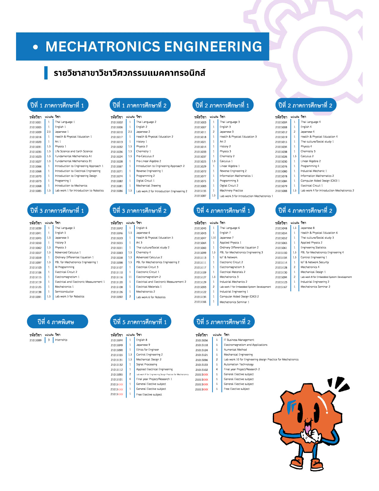
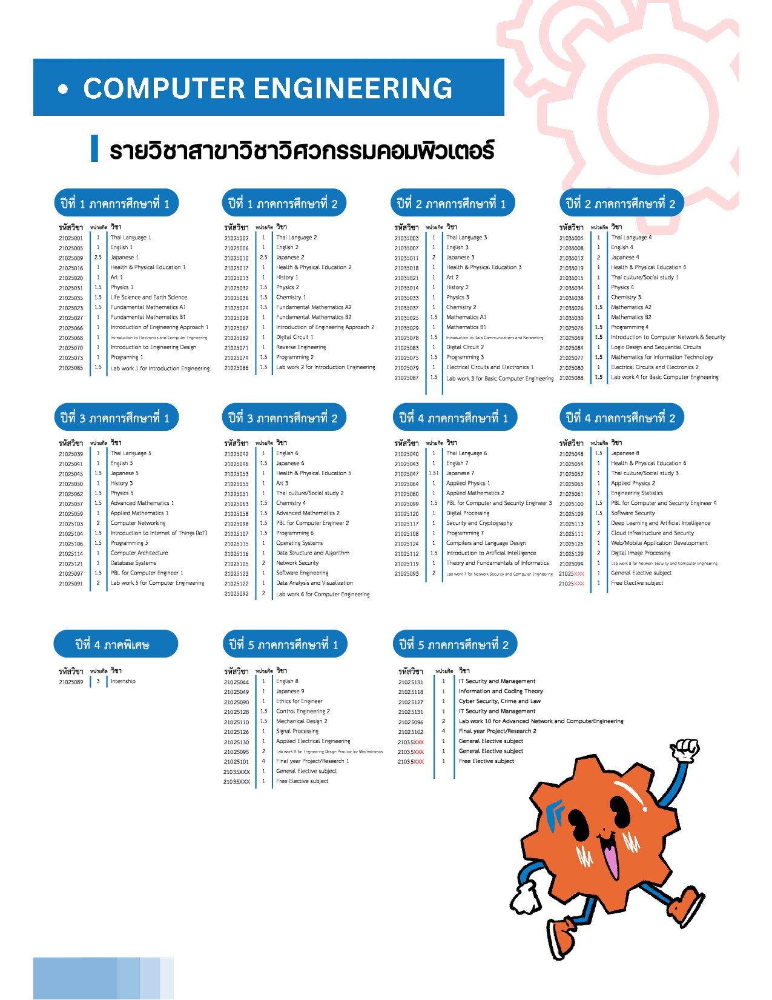
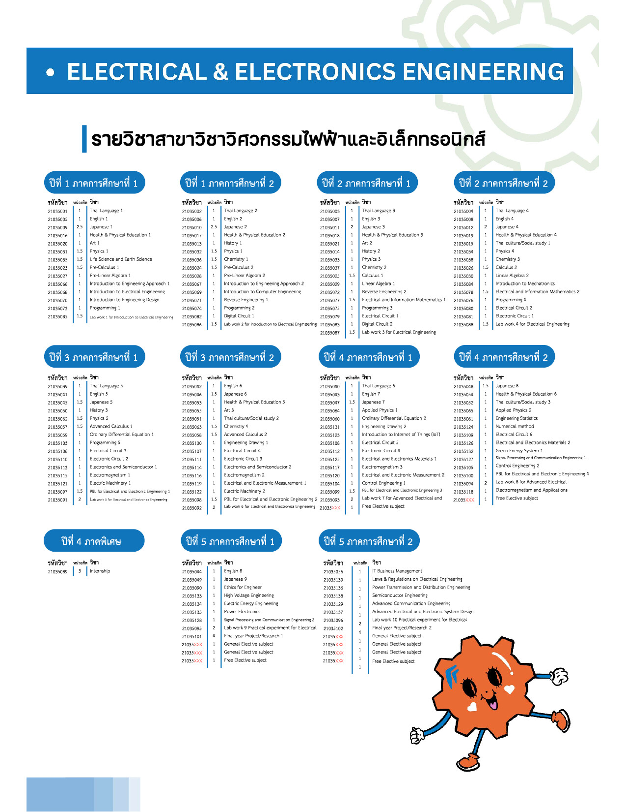

Mechatronics Engineering Department is an interdisciplinary course that integrates knowledge from mechanical engineering and electronics engineering. This integration allows students to learn about robotics technology, automation systems, control systems, and manufacturing, all taught by expert instructors.
Course for Mechatronics Engineering The Computer Engineering program focuses on the design, development, application, and problem-solving of computer systems and operations in all aspects. It also aligns with global trends in areas such as Artificial Intelligence (AI), the Internet of Things (IoT), and Network & Cyber Security. The program equips students with strong foundations in both hardware and software, enabling them to analyze real-world problems and develop effective technological solutions. Graduates are prepared to adapt to rapidly evolving technologies and pursue careers in various fields of the modern digital industry.
Course for Computer Engineering The Electrical and Electronics Engineering Department focuses on equipping students with in-depth knowledge and expertise in both electrical and electronics engineering. It aims to develop their abilities in designing and advancing electrical power systems and high-level electrical engineering, which are essential for future smart systems. The program also encourages students to apply their engineering and technological knowledge to create innovations, solve problems effectively in electrical and electronics engineering, and develop strong teamwork skills and professional ethics.
Course for Electrical Engineering The Bachelor of Engineering program at KOSEN - KMITL, offers an advanced innovation engineering track with a duration of 2 years. This program builds upon content from the associate degree level and provides two learning formats: Format 1 includes scholarship opportunities, and Format 2 allows students to study while working
Course for Advanced Innovation Engineering - Format 1 or Plan A